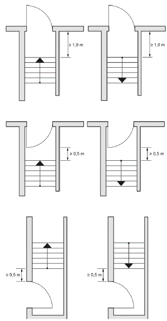
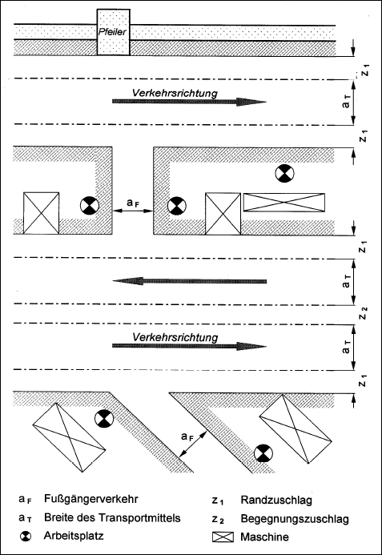
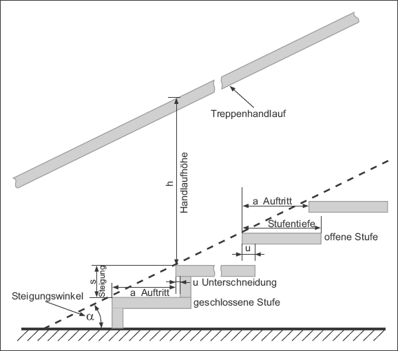
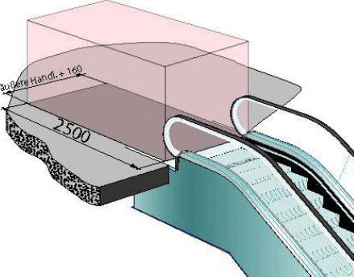

(1) Damit im späteren Betrieb von Verkehrswegen keine Gefährdungen für Sicherheit und Gesundheit der Beschäftigten ausgehen, ist bereits bei der Planung von Verkehrswegen die Art des Betriebes zu berücksichtigen, beispielsweise beim Einsatz von Flurförderzeugen in Schmalgängen (siehe Abschnitt 4.3 Absatz. 10) oder bei der Festlegung von Verkehrsrichtungen.
(2) Verkehrswege sind übersichtlich zu führen und sollen möglichst gradlinig verlaufen.
Die Verkehrswege eines Höhenniveaus (Geschosses) müssen grundsätzlich waagerecht angelegt sein. Nicht vermeidbare Höhenunterschiede (z. B. zwischen benachbarten Gebäudeteilen oder wenn z. B. ein Gefälle zum Ableiten von Flüssigkeiten erforderlich ist) sind in Abhängigkeit vom Verkehrsaufkommen, der jeweiligen Verkehrsart und den verwendeten Transportmitteln vorzugsweise durch Schrägrampen auszugleichen. Dabei müssen Gefährdungen (z. B. durch Kippen, Auslaufen oder Wegrollen) vermieden werden.
(3) Verkehrswege sind so einzurichten, dass die Belastung der Beschäftigten, die Lasten manuell transportieren, möglichst gering gehalten wird. Folgende Einflussfaktoren sind besonders in Betracht zu ziehen:
(4) Schrägrampen für den Fahr- und Fußgängerverkehr dürfen in Abhängigkeit von der Art der Nutzung die in Tabelle 1 aufgeführten Längsneigungen nicht überschreiten.
Tab. 1: Maximale Neigungen für unterschiedliche Nutzungsarten von Schrägrampen
| Art der Rampe | Maximale Längsneigung | |
| 1 | Schrägrampen im Verlauf von Fluchtwegen | 3,5° (6 %) |
| 2 | Schrägrampen beim Einsatz von Flurförderzeugen ohne Fahrantrieb bzw. manuell zu bewegender Transportmittel (bei der Neuanlage von Arbeitsstätten) | 3,5° (6 %) |
| 3 | Schrägrampen im Regelfall (sofern nicht Ziffer 1 oder 2 anzuwenden ist) | 5° (8 %) |
| 4 | Schrägrampen zur Anwendung im Einzelfall entsprechend Gefährdungsbeurteilung | 7° (12,5 %)* |
* Abweichungen von Nummer 4 sind gemäß Bauordnungsrecht der Länder möglich (z. B. bei Garagen).
(5) Verkehrswege müssen eine ebene und trittsichere Oberfläche aufweisen, um Gefährdungen durch z. B. Stolpern, Umstürzen oder Wegrutschen zu vermeiden. Einbauten (z. B. Schachtabdeckungen, Roste, Abläufe) sind bündig in die Verkehrswege einzupassen. Der Oberflächenbelag ist den maximalen Beanspruchungen, z. B. durch Schleifen, Rollen, Druck, Stoß und Schlag sowie der Verkehrsbelastung, entsprechend zu wählen.
(6) Beschäftigte müssen auf Verkehrswegen vor Gefährdungen durch Absturz oder durch herabfallende Gegenstände, umstürzende Lasten oder Fahrzeuge und Transportmittel durch geeignete Maßnahmen geschützt sein (siehe ASR A2.1 "Schutz vor Absturz und herabfallenden Gegenständen, Betreten von Gefahrenbereichen").
(7) Verkehrswegkreuzungen und -einmündungen müssen übersichtlich gestaltet und einsehbar sein. Ist dies nicht möglich, sind verkehrssichernde Maßnahmen zu ergreifen, z. B. Drehkreuze, Schranken, Ampeln, Blinkleuchten, Spiegel, Hinweisschilder. Dies gilt auch für Kreuzungen zwischen Verkehrswegen und Gleisen.
(8) Im Freien liegende Verkehrswege, insbesondere Treppen, Laderampen, Fahrsteige, Gebäudeein- und -ausgänge, müssen sicher benutzbar sein. Hierbei sind Witterungseinflüsse zu berücksichtigen. Erforderliche Schutzmaßnahmen können z. B. eine Überdachung, ein Windschutz oder ein Winterdienst sein.
Hinweis:
Ergänzende Anforderungen an Verkehrswege auf nicht durchtrittsicheren Dächern enthält ASR A2.1 "Schutz vor Absturz und herabfallenden Gegenständen, Betreten von Gefahrenbereichen".
(1) Die Breite der Wege für den Fußgängerverkehr wird aus der Anzahl der gehenden Personen, die diese nutzen müssen, und aus der Art der Nutzung (z. B. Begegnung des Personenverkehrs, Krankentransport, Tragen von Kindern, Transport von Arbeitsmitteln) ermittelt. Dabei sind die nachfolgenden Mindestbreiten nach Tabelle 2 nicht zu unterschreiten.
Tab. 2: Lichte Mindestbreite der Wege für den Fußgängerverkehr
| Nr. | Verkehrsweg | (in m) | (in m) |
1 2 3 4 5 6 7 | Anzahl der Personen bis 5 bis 20 bis 50 bis 100 bis 200 bis 300 bis 400 | 0,80*) 0,90 0,90 1,00 1,05 1,65 2,25 | 0,90 1,00 1,20 1,20 1,20 1,80 2,40 |
| Bei Einzugsgebieten von mehr als 200 Personen sind Zwischenwerte der Mindestbreiten (ermittelt durch lineare Interpolation) zulässig. *) Hinweis: Bei Neubauten und wesentlichen baulichen Erweiterungen oder Umbauten wird empfohlen, für Einzugsgebiete von bis zu 5 Personen nach Nummer 1 Spalte B eine lichte Mindestbreite von Durchgängen und Türen im Verlauf von Hauptfluchtwegen nach ASR A2.3 "Fluchtwege und Notausgänge" Abschnitt 3.1 von 0,90 m einzuhalten, um auch in diesen Bereichen eine barrierefreie Zugänglichkeit zu ermöglichen. Zudem lassen sich auf diesem Wege bauliche Maßnahmen im Sinne der ASR V3a.2 "Barrierefreie Gestaltung von Arbeitsstätten" und in der Folge Umbaukosten vermeiden. | |||
| Die lichten Mindestbreiten von Treppen in Treppenräumen und Außentreppen von mehrgeschossigen Gebäuden können alternativ gemäß ASR A2.3 "Fluchtwege und Notausgänge" Abschnitt 5 Absätze 14, 15 und 16 bemessen werden, sofern nicht die Art der Nutzung (z. B. Begegnungen des Personenverkehrs, manuelle Transporte, Publikumsverkehr) höhere Breiten erfordert. | |||
| Abweichend für Verkehrswege zu besonderen Bereichen | (in m) | ||
| 8 | Gänge zu persönlich zugewiesenen Arbeitsplätzen, Hilfstreppen | ||
| 9 | Gänge zur Instandhaltung, Gänge zu Betriebseinrichtungen ohne Begegnungsverkehr | ||
10 11 | Verkehrswege für Fußgänger
| 0,75 1,25 | |
| 12 | Verkehrswege zwischen Schienenfahrzeugen mit Geschwindigkeiten ≤ 30 km/h und ohne feste Einbauten in den Verkehrswegen | ||
| 13 | Rangiererwege | ||
| 14 | Türen von Toilettenzellen und von Toilettenräumen mit nur einer Toilette entsprechend ASR A4.1 "Sanitärräume" | ||
(2) Die lichte Mindestbreite des Verkehrswegs darf durch kurze Einbauten oder Einrichtungen, z. B. Feuerlöscher, Wandvorsprünge, Türflügel, Türzargen, Türdrücker und Notausgangsbeschläge, die lichten Mindestbreiten der Durchgänge und Türen nach Tabelle 2 Spalte B nicht unterschreiten.
(3) In Gebäuden, die bis zum 30.9.2022 errichtet worden sind oder deren Bauantragstellung bis zu diesem Termin erfolgt ist, dürfen Verkehrswege nach Tabelle 2 Nummer 1 Spalte C für bis 5 Personen mit einer lichten Mindestbreite von 0,875 m eingerichtet oder solange betrieben werden, bis die jeweiligen Bereiche dieser Arbeitsstätten wesentlich erweitert oder umgebaut werden oder nach § 3a Absatz 2 der Arbeitsstättenverordnung eine Vergrößerung erforderlich wird.
(4) In Gebäuden, die bis zum 30.9.2022 errichtet worden sind oder deren Bauantragstellung bis zu diesem Termin erfolgt ist, dürfen Durchgänge und Türen nach Tabelle 2 Nummer 2 Spalte B mit einer lichten Mindestbreite von 0,85 m eingerichtet oder solange betrieben werden, bis die jeweiligen Bereiche dieser Arbeitsstätten wesentlich erweitert oder umgebaut werden oder nach § 3a Absatz 2 der Arbeitsstättenverordnung eine Vergrößerung erforderlich wird.
(5) In Gebäuden, die bis zum 30.9.2022 errichtet worden sind oder deren Bauantragstellung bis zu diesem Termin erfolgt ist, dürfen Gänge zur Instandhaltung oder Gänge zu Betriebseinrichtungen ohne Begegnungsverkehr mit einer Mindestbreite von 0,50 m eingerichtet oder solange betrieben werden, bis die jeweiligen Bereiche dieser Arbeitsstätten wesentlich erweitert oder umgebaut werden.
(6) In Gebäuden, die bis zum 30.9.2022 errichtet worden sind oder deren Bauantragstellung bis zu diesem Termin erfolgt ist, dürfen Türen von Toilettenzellen und Toilettenräumen mit nur einer Toilette mit einer lichten Mindestbreite von 0,50 m eingerichtet oder solange betrieben werden, bis die jeweiligen Bereiche dieser Arbeitsstätten wesentlich erweitert oder umgebaut werden.
(7) Die lichte Höhe über Verkehrswegen soll 2,10 m betragen und darf 2,00 m nicht unterschreiten. Die lichte Höhe von Durchgängen und Türen im Verlauf von Verkehrswegen soll 2,10 m betragen und darf 1,95 m nicht unterschreiten. Dieses gilt auch bei der Verwendung von Funktionselementen, z. B. Obentürschließern. Bei wesentlichen Erweiterungen oder wesentlichen Umbauten von Bereichen, durch die Verkehrswege führen, ist zu prüfen, ob die lichte Mindesthöhe von 2,10 m umgesetzt werden kann. Gänge zur Instandhaltung dürfen eine lichte Mindesthöhe von 1,90 m nicht unterschreiten. Eine weitere Unterschreitung der Mindesthöhe an Türen im Verlauf von Gängen zur Instandhaltung von maximal 0,10 m kann vernachlässigt werden (siehe ASR A1.7 "Türen und Tore").
(8) Verkehrswege dürfen nicht durch einzelne Stufen unterbrochen werden. Können Höhenunterschiede nicht durch eine Schrägrampe (siehe Abschnitt 4.1 Absatz 2) ausgeglichen werden, ist eine Stufenfolge von mindestens zwei zusammenhängenden Stufen mit parallel verlaufenden Stufenkanten und gleichen Stufenabmessungen zulässig. Die Auftritte und Steigungen der Stufen sollen sich nach dem Abschnitt 4.5 Absatz 4 richten. Die Stufenfolge ist nach ASR A1.3 "Sicherheits- und Gesundheitsschutzkennzeichnung" zu kennzeichnen. Verkehrswege, die gleichzeitig als Hauptfluchtweg dienen, dürfen keine Ausgleichsstufen enthalten (siehe ASR A2.3 "Fluchtwege und Notausgänge").
(9) Unmittelbar vor und hinter Türen müssen Treppen und Stufen einen Abstand von mindestens 1,0 m, bei aufgeschlagener Tür einen Abstand von mindestens 0,5 m einhalten (siehe Abbildung 2).

Abb. 2: Abstandsmaße von Treppen zu Türöffnungen
(1) Fußgänger- und Fahrzeugverkehr sind so zu führen, dass Beschäftigte nicht gefährdet werden.
(2) Wege für den Fahrzeugverkehr müssen in einem Mindestabstand von 1,00 m an Türen und Toren, Durchgängen, Durchfahrten und Treppenaustritten vorbeiführen.
Hinweis:
Es hat sich bewährt, den Fußgängerverkehr in diesen Bereichen zusätzlich durch ein Geländer vom Fahrzeugverkehr zu trennen.
(3) Die Mindestbreite der Wege für den Fahrzeugverkehr berechnet sich aus der Summe (siehe Abbildung 3):
Sicherheitszuschläge (Rand- und Begegnungszuschläge) sind abhängig von der Fahrgeschwindigkeit und der Kombination von Fußgänger- und Fahrzeugverkehr (siehe Tabelle 3). Bei Geschwindigkeiten des Fahrzeugverkehrs größer als 20 km/h sind größere Werte für Z1 und Z2 erforderlich.

Abb. 3: Verkehrswegbreiten, Sicherheitszuschläge (siehe auch Tabellen 2 und 3)
Tab. 3: Mindestmaße von Sicherheitszuschlägen für die Verkehrswegbreiten bei Geschwindigkeiten < 20 km/h
| Betriebsart | Randzuschlag | Begegnungszuschlag |
| Fahrzeugverkehr | 2 x Z1 = 2 x 0,50 m = 1,00 m | Z2 = 0,40 m |
| Gemeinsamer Fußgänger- und Fahrzeugverkehr | 2 x Z1 = 2 x 0,75 m = 1,50 m | Z2 = 0,40 m |
(4) Bei einer geringen Anzahl von Verkehrsbegegnungen (ca. 10 pro h) darf die Summe aus doppeltem Rand- und einfachem Begegnungszuschlag bis auf 1,10 m herabgesetzt werden, wenn dadurch keine zusätzliche Gefährdung für die Beschäftigten entsteht. Als Verkehrsbegegnungen zählen sowohl die Begegnungen Fahrzeug-Fahrzeug als auch Fahrzeug-Fußgänger. Bei einspuriger Verkehrsführung darf der doppelte Randzuschlag nicht verringert werden.
(5) Bei manuell zu bewegenden Flurförderzeugen sind die Sicherheitszuschläge entsprechend der Gefährdungsbeurteilung festzulegen.
(6) An Kurven und zweckmäßigerweise auch an Kreuzungen ist die Breite des Verkehrsweges in Abhängigkeit von den Wenderadien der Fahrzeuge einschließlich des Ladegutes zu bemessen. Hierbei sind die entsprechenden Angaben der Hersteller zu berücksichtigen.
(7) Die Mindesthöhe über Verkehrswegen für den Fahrzeugverkehr ergibt sich aus der größten Höhe des Fahrzeugs einschließlich Ladung in Transportstellung sowie dem stehenden oder sitzenden Fahrer. Zu dieser Höhe ist ein Sicherheitszuschlag von mindestens 0,20 m anzusetzen. Die lichte Höhe muss über die gesamte Breite des Verkehrsweges, der von Transportmitteln genutzt werden kann, eingehalten werden.
(8) Werden Verkehrswege auch als Feuerwehrzufahrten genutzt, so sind diese mindestens mit einem Lichtraumprofil von 3,50 m x 3,50 m einzurichten. Sie sind ständig freizuhalten und dürfen, z. B. durch nachträgliche Einbauten, nicht eingeengt werden.
(9) Werden geeignete Personenerkennungssysteme beim Einsatz automatisch gesteuerter Transportmittel (fahrerlos betrieben) verwendet, sind Abweichungen aufgrund der Gefährdungsbeurteilung bei der Bemessung der Rand- und Begegnungszuschläge zulässig.
(10) Bei gleichzeitigem Aufenthalt von kraftbetriebenen Flurförderzeugen (z. B. Regal- und Kommissionierstapler) und Fußgängern in Schmalgängen müssen geeignete technische bzw. bauliche Schutzmaßnahmen (z. B. Personenerkennungssystem) installiert werden.
(1) Lassen sich Gefährdungen im Verlauf von Verkehrswegen nicht durch technische Maßnahmen verhindern oder beseitigen, oder ergeben sich Gefährdungen durch den Fahrzeugverkehr aufgrund unübersichtlicher Betriebsverhältnisse (z. B. durch Arbeits- und Lagerflächen ohne feste Einbauten), sind die Verkehrswege gemäß ASR A1.3 "Sicherheits- und Gesundheitsschutzkennzeichnung" deutlich erkennbar zu kennzeichnen, z. B. Laderampenkanten an ständigen Be- und Entladestellen durch gelb-schwarze Streifen oder eine zeitlich begrenzte Gefahr ausgehend von ausgelaufener Flüssigkeit durch das Warnzeichen W011 "Warnung vor Rutschgefahr". Eine Kennzeichnung kann entfallen, wenn die Verkehrswege durch feststehende Betriebseinrichtungen (z. B. Regale) eindeutig bestimmt sind und sich dadurch keine Gefährdungen ergeben.
(2) Zur Kenntlichmachung der Abgrenzung zwischen niveaugleichen Verkehrswegen und umgebenden Arbeits- und Lagerflächen, sowie zwischen Wegen für den Fußgänger- und Fahrzeugverkehr können verschiedene Markierungsformen (z. B. dauerhafte Farbmarkierung, Markierungsleuchten siehe ASR A1.3 "Sicherheits- und Gesundheitsschutzkennzeichnung" Abschnitt 5.3) eingesetzt werden.
(3) Wenn es das Ergebnis der Gefährdungsbeurteilung erforderlich macht, sind Geländer oder Leitplanken zur Abgrenzung zwischen niveaugleichen Verkehrswegen und umgebenden Arbeits- und Lagerflächen sowie zwischen Wegen für den Fußgänger- und Fahrzeugverkehr zu setzen.
(1) Treppen sind so zu gestalten, dass diese sicher und leicht begangen werden können. Das wird erreicht durch ausreichend große, ebene, rutschhemmende, erkennbare und tragfähige Auftrittsflächen in gleichmäßigen, mit dem Schrittmaß übereinstimmenden Abständen.
(2) Die Steigungen und Auftritte einer Treppe, die zwei Geschosse verbindet, dürfen nicht voneinander abweichen. Die Treppenstufen sollen kontrastreich und möglichst ohne störende Blendung des Benutzers ausgeleuchtet sein (siehe ASR A3.4 "Beleuchtung").
(3) Unter Berücksichtigung der Unfallgefahren sind Treppen mit geraden Läufen solchen mit gewendelten Läufen oder gewendelten Laufteilen vorzuziehen. Treppen im Verlauf von Hauptfluchtwegen (nach ASR A2.3 "Fluchtwege und Notausgänge") müssen über gerade Läufe verfügen. Davon abweichend sind gebogene Treppenläufe zulässig, wenn sie:
aufweisen.

Abb. 4: Benennung einzelner Teile an Treppen
(4) Für Treppen (siehe Abbildung 4) ergibt sich als Beziehung zwischen Schrittlänge (SL), Auftritt (a) und Steigung (s) die Schrittmaßregel SL = 2 x s + a. Für eine gute Begehbarkeit einer Treppe soll die Schrittlänge zwischen 59 cm und 65 cm betragen.
In Arbeitsstätten darf die Steigung (s) zwischen 14 cm und 19 cm, der Auftritt (a) zwischen 26 cm und 32 cm und der Steigungswinkel (α) zwischen 24° und 36° variieren (siehe Tabelle 4). Die Maße sind Grenzmaße, die auch bei zulässigen Fertigungs- und Einbautoleranzen eingehalten werden müssen.
Als besonders sicher begehbar haben sich Treppen erwiesen, deren Stufen einen Auftritt von 29 cm und eine Steigung von 17 cm aufweisen.
Tab. 4: Auftritte und Steigungen unterschiedlicher Treppen
| Anwendungsbereich/Bauten | Auftritt (a) [cm] | Steigung (s) [cm] |
| Versammlungsstätten, Verwaltungsgebäude der öffentlichen Verwaltung, Schulen, Horte, Kindertageseinrichtungen, Treppen im Freien | 28 bis 32 | 14 bis 17 |
| gewerbliche Bauten, sonstige Gebäude | 26 bis 30 | 16 bis 19 |
| Hilfstreppen | 21* bis 30 | 14 bis 21 |
* Bei Stufen, deren Auftritt a < 24 cm ist, muss die Unterschneidung (u) mindestens so groß sein, dass insgesamt eine Stufentiefe u + a = 24 cm erreicht wird.
(5) Hilfstreppen dürfen nur verwendet werden, wenn sie nicht arbeitstäglich begangen werden müssen. Die Nutzung von Hilfstreppen darf nur von unterwiesenen Personen erfolgen. Hilfstreppen sollen zur erhöhten Sicherheit mit zwei Handläufen ausgestattet sein.
(6) Bei Treppenläufen mit einem Steigungswinkel bis 36° muss nach höchstens 18 Trittstufen ein Zwischenpodest vorhanden sein. In begründeten Ausnahmefällen kann in Arbeitsstätten, die bis zum 30.6.2013 errichtet worden sind oder deren Bauantragstellung bis zu diesem Termin erfolgt ist, davon abgewichen werden bis die jeweiligen Bereiche dieser Arbeitsstätten wesentlich erweitert oder umgebaut werden. Bei Hilfstreppen mit einem Steigungswinkel größer als 36° ist nach jedem Treppenlauf mit einem Höhenunterschied von 3 m ein Zwischenpodest erforderlich.
(7) Die freien Seiten der Treppen, Treppenabsätze und Treppenöffnungen müssen durch Geländer gesichert sein. Die Höhe der Geländer muss lotrecht über der Stufenvorderkante mindestens 1,00 m betragen. Bei Absturzhöhen von mehr als 12 m muss die Geländerhöhe mindestens 1,10 m betragen (siehe ASR A2.1 "Schutz vor Absturz und herabfallenden Gegenständen, Betreten von Gefahrenbereichen").
(8) Die Geländer müssen so ausgeführt sein, dass sie in der angebrachten Mindesthöhe eine Horizontalkraft von mindestens 500 N/m aufnehmen können.
(9) Geländer müssen so ausgeführt sein, dass Personen nicht hindurchstürzen können. Das Füllstabgeländer mit senkrecht angebrachten Stäben ist dem Knieleistengeländer vorzuziehen. Der lichte Abstand zwischen den Füllstäben darf dabei nicht mehr als 18 cm betragen (siehe ASR A2.1 "Schutz vor Absturz und herabfallenden Gegenständen, Betreten von Gefahrenbereichen").
(10) Treppen müssen:
In Arbeitsstätten, die bis zum 30.6.2013 errichtet worden sind oder deren Bauantragstellung bis zu diesem Termin erfolgt ist, müssen Treppen mit mehr als 4 Stufen (Steigungen) mindestens einen Handlauf haben, soweit das Bauordnungsrecht der Länder einen Handlauf nicht schon bei geringerer Stufenzahl fordert oder bis die jeweiligen Bereiche dieser Arbeitsstätten wesentlich erweitert oder umgebaut werden.
(11) Treppenhandläufe müssen dem Benutzer einen sicheren Halt bieten. Hierzu wird eine ergonomische Gestaltung des Handlaufs empfohlen, die ein sicheres Umgreifen ermöglicht. Dies wird dadurch gewährleistet, dass der Durchmesser bzw. die Breite des Handlaufes zwischen 2,5 cm und 6 cm beträgt. Treppenhandläufe sollen durchgehend ausgeführt werden. Sie dürfen an den Übergängen zu Zwischenpodesten und Ebenen unterbrochen werden, wenn eine sichere Nutzung zu erwarten ist und nicht ohnehin auf Grund der Anforderungen aus dem Bauordnungsrecht eine Durchgängigkeit gefordert ist.
Handläufe sind in einer Höhe zwischen 0,80 m und 1,15 m zu führen. Ein seitlicher Mindestabstand von 5 cm zu benachbarten Bauteilen ist einzuhalten. Halterungen für Handläufe sollen an der Unterseite angeordnet sein. Die Enden der Handläufe müssen so gestaltet sein, dass Beschäftigte daran nicht hängen bleiben oder abgleiten können.
(12) Um dem Abrutschen und Hängenbleiben an den Stufenvorderkanten vorzubeugen, sollen deren Radien zwischen 2 mm und 10 mm liegen.
(13) Die Trittflächen von Treppen müssen rutschhemmend ausgeführt sein.
(14) Stolperstellen (z. B. hochstehende Kantenprofile) auf Treppen sind nicht zulässig.
(1) Steigeisengänge und Steigleitern sind wegen der höheren Absturzgefahr und der höheren körperlichen Anstrengung beim Benutzen nur zulässig, wenn der Einbau einer Treppe betriebstechnisch nicht möglich ist. Auf Grundlage der Gefährdungsbeurteilung können Steigleitern oder Steigeisengänge gewählt werden, wenn der Zugang nur zu Instandhaltungsarbeiten und von unterwiesenen Beschäftigten genutzt werden muss. Der Transport von Werkzeugen oder anderen Gegenständen durch die Beschäftigten darf die sichere Nutzung von Steigeisengängen und Steigleitern nicht wesentlich behindern. Die Möglichkeit der Rettung der Beschäftigten ist dabei jederzeit sicherzustellen.
Bei Verwendung von Persönlicher Schutzausrüstung gegen Absturz (PSAgA) muss ein Rettungssystem zur Verfügung stehen, dass an jeder beliebigen Stelle eine Rettung von Personen aus Notlagen ermöglicht.
(2) In bestimmten Bereichen mit besonderen Gefährdungen ist der Einsatz von Steigeisengängen und Steigleitern unzulässig. Dies gilt z. B. in Bereichen, in denen Erstickungsgefahr droht, wie in Deponien bei Schächten mit einer inneren Bauhöhe von mehr als 5,00 m.
Hinweis:
Werden Steigeisengänge und Steigleitern in explosionsgefährdeten Bereichen eingesetzt, sind besondere Anforderungen zu beachten (siehe TRBS 2152 Teil 1 "Gefährliche explosionsfähige Atmosphäre – Beurteilung der Explosionsgefährdung").
(3) Steigeisengänge und Steigleitern sind aus dauerhaften Werkstoffen herzustellen und gegen Korrosion zu schützen. Dabei sind sie nach den jeweiligen Betriebsverhältnissen auszuwählen.
(4) Die Befestigung der Steigeisen und Steigleitern muss zuverlässig und dauerhaft sein. Zu berücksichtigen sind dabei die zu erwartenden Belastungen und die Tragfähigkeit des Befestigungssystems und des Verankerungsgrundes.
(1) Steigeisen und Steigleitern müssen trittsicher sein. Hierzu gehört auch die Rutschhemmung, deren Ausführung sich nach den betrieblichen Verhältnissen richtet.
(2) Die Auftrittsbreiten von Steigeisen und Steigleitersprossen sind in der Regel ausreichend dimensioniert, wenn folgende Mindestmaße eingehalten werden:
Ausreichende Fußfreiraumtiefen sind in der Regel gegeben, wenn mindestens 150 mm zwischen Wandfläche und Auftrittsachse oder mindestens 160 mm gemessen von Wandfläche und Auftrittsvorderkante eingehalten werden.
(3) Ein- und Ausstiege an Steigeisengängen und Steigleitern müssen sicher begehbar sein. Dazu ist die Haltevorrichtung an der Austrittstelle bei Steigleitern mindestens 1,10 m, bei Steigeisengängen mindestens 1,00 m über die Austrittstelle hinauszuführen (Schnittstelle zum Übergang auf höher gelegene Verkehrswege, z. B. auf Dächern, siehe ASR A2.1 "Schutz vor Absturz und herabfallenden Gegenständen, Betreten von Gefahrenbereichen").
Im Allgemeinen darf der Abstand von der Standfläche bis zum untersten Steigeisen bei Steigeisengängen höchstens einen Steigeisenabstand, abweichend davon in Schächten zwei Steigeisenabstände, betragen. Die Steigeisenabstände dürfen maximal 333 mm betragen. Der lotrechte Abstand zwischen oberstem Steigeisen und Austrittsstelle darf höchstens einen Steigeisenabstand betragen. Bei Schächten im Straßenbau mit Einstiegsöffnungen von nicht mehr als 650 mm Durchmesser kann der Abstand bis auf 500 mm vergrößert werden. Wenn sich durch nachträgliches Aufbringen/Erhöhen der Straßendecke Änderungen ergeben, sind in Ausnahmefällen 650 mm bei bestehenden Anlagen statthaft.
(4) Der Abstand von der Vorderkante des Auftritts bis zu festen Bauteilen oder fest angebrachten Gegenständen muss bei Schächten auf der begehbaren Seite so groß sein, dass die Rettung von Personen jederzeit gewährleistet ist.
(5) An Steigeisengängen und Steigleitern müssen in Abständen von höchstens 10 m geeignete Ruhebühnen vorhanden sein. Für den Fall der Verwendung von Steigschutzeinrichtungen mit Schiene (z. B. zum Besteigen von Schornsteinen, Antennen) darf der Abstand bis auf maximal 25 m verlängert werden, wenn die Benutzung nur durch körperlich geeignete Beschäftigte erfolgt, die nachweislich im Benutzen des Steigschutzes geübt und regelmäßig unterwiesen sind.
(6) Im Bereich der Ruhebühnen müssen Steigeisengänge und Steigleitern ungehindert begehbar sein.
(1) Die Sicherungsmaßnahmen gegen Absturz sind unter Berücksichtigung der Fallhöhe (siehe Abschnitt 3.16) und der betriebsspezifischen Gefährdungen festzulegen.
(2) Einrichtungen zum Schutz gegen Absturz können ortsfest (Steigschutzeinrichtung, Rückenschutz) oder ortsveränderlich (z. B. Dreibein mit Höhensicherungsgerät mit Rettungsfunktion) ausgeführt sein.
(3) Bei Abweichungen des Steigganges von der Senkrechten muss bereits vor der Ausstattung mit Steigschutzeinrichtungen geprüft werden, ob die Funktion der Steigschutzeinrichtung auch unter diesen Umständen gewährleistet ist.
(4) Steigeisengänge und Steigleitern mit mehr als 5 m Fallhöhe müssen mit Einrichtungen zum Schutz gegen Absturz ausgestattet sein. Solche Einrichtungen sind z. B.:
(5) Bei Fallhöhen von mehr als 10 m dürfen nur PSAgA (z. B. Steigschutzeinrichtungen) vorgesehen werden. Dies gilt, unabhängig von der Fallhöhe, auch für Steigeisengänge und Steigleitern:
(6) Bestehen besondere Gefährdungen beim Einstieg in Schächte (z. B. Abwasserschächte), sind die unter den Absätzen 4 und 5 genannten Schutzmaßnahmen gegen Absturz bereits bei Fallhöhen unter 5 m erforderlich.
(7) Zur Sicherstellung der Rettung von Personen aus oder über Steigeisengängen und Steigleitern mit Steigschutzeinrichtungen darf kein zusätzlicher Rückenschutz angebracht sein, da dieser eine Rettung behindert.
(8) Die Nutzung der Steigschutzeinrichtungen muss bereits an der Einstiegsebene möglich sein.
(1) Die Breite der Laderampe ist so zu wählen, dass – sofern Längsverkehr mit kraftbetriebenen Transportmitteln vorgesehen ist – der Mindestabstand (Randzuschlag Z1 siehe Tabelle 3) zu festen Bauteilen gewährleistet ist.
(2) Die Breite von Laderampen darf 0,80 m nicht unterschreiten.
(3) Laderampen müssen über geeignete Auf- bzw. Abgänge verfügen. Wenn betriebstechnisch möglich, sind Auf- bzw. Abgänge als Treppen oder als geneigte sicher begeh- oder befahrbare Flächen auszuführen. Die Auf- bzw. Abgänge sollen möglichst nahe an den Be- und Entladestellen angeordnet sein.
(4) Laderampen mit einer Länge von mehr als 20 m müssen, sofern betriebstechnisch möglich, an jedem Endbereich einen Abgang haben.
(5) Besteht die Gefährdung, dass Personen oder Flurförderzeuge abstürzen können (siehe ASR A2.1 "Schutz vor Absturz und herabfallenden Gegenständen, Betreten von Gefahrenbereichen"), müssen folgende Verkehrsbereiche durch Umwehrungen – vorzugsweise durch Geländer – gesichert sein:
(6) Bereiche von Laderampen in denen Absturzgefahr besteht, dürfen nur von Personen betreten werden, die mit Tätigkeiten für die Dauer zum Be- bzw. Entladevorgang beauftragt sind und zuvor über die bestehenden Gefährdungen unterwiesen wurden.
Hinweis:
In Arbeitsstätten müssen Fahrtreppen und Fahrsteige hinsichtlich ihrer Beschaffenheitsanforderungen den europäischen und nationalen Vorschriften, z. B. der Neunten Verordnung zum Produktsicherheitsgesetz, entsprechen. Sie müssen für die Nutzung in Arbeitsstätten geeignet sein und sicher betrieben werden können.
(1) Die Einbausituation und das Betreiben von Fahrtreppen und Fahrsteigen stellen Anforderungen an die Nutzungssicherheit, die auch deren Beschaffenheit betreffen kann. Daher ist beim Einrichten und Betreiben in der Arbeitsstätte im Rahmen der Gefährdungsbeurteilung die Eignung und Verwendbarkeit von Fahrtreppen und Fahrsteigen für die vorgesehene Nutzung zu prüfen und ggf. die erforderlichen baulichen Sicherungsmaßnahmen und Veränderungen am Einbauort vorzunehmen (z. B. durch Einrichtungsgegenstände zusätzlich entstandene Quetschstellen sind zu sichern). Dabei sind die Herstellerangaben (z. B. Einbau- oder Betriebsanleitung) zu berücksichtigen.
(2) Fahrtreppen oder Fahrsteige sind immer ein Teil der Verkehrswege. Sie müssen deshalb den zu- und abführenden Verkehrsströmen angepasst sein.
(3) Die Breite des Stauraums muss mindestens der Breite der Fahrtreppe oder des Fahrsteiges entsprechen. Die Breite der Fahrtreppen oder Fahrsteige ergibt sich aus der horizontal gemessenen Breite der Fahrtreppen oder Fahrsteige zwischen den Handlaufaußenseiten und einem beidseitigen Sicherheitsabstand zur Umgebung von jeweils 80 mm (siehe Abbildung 5). Die Tiefe muss mindestens 2,5 m – gemessen vom Ende der Balustrade – betragen. Sie darf auf 2,0 m verringert werden, wenn der Stauraum in der Breite mindestens auf die doppelte Breite der Fahrtreppe oder des Fahrsteiges vergrößert wird.

Abb. 5: Stauraum an einer Fahrtreppe (Maße in mm)
(4) Beim Einrichten sind die nachfolgenden Maßnahmen anzuwenden:
(5) Beim Einrichten ist sicherzustellen, dass das Besteigen der Außenseite der Balustrade verhindert wird, z. B. durch Geländer.
(6) Beim Einrichten von Fahrtreppen und Fahrsteigen in Arbeitsstätten ist darauf zu achten, dass das Stillsetzen der Anlage durch NOT-HALT-Einrichtungen an den Zu- und Abgängen zu jeder Zeit gewährleistet ist. NOT-HALT-Einrichtungen sind gut erkennbar und leicht erreichbar anzuordnen. Die Abstände zwischen den NOT-HALT-Einrichtungen dürfen 30 m bei Fahrtreppen sowie 40 m bei Fahrsteigen nicht überschreiten. Falls erforderlich, müssen zusätzliche NOT-HALT-Einrichtungen vorgesehen werden, um diese Abstände einzuhalten.
(7) Um Stolpern oder Ausrutschen zu vermeiden, müssen die angrenzenden Bodenbeläge an die Rutschhemmung der Zu- und Abgänge der Fahrtreppen und Fahrsteige angepasst sein.
(8) Fahrtreppen und Fahrsteige dürfen (außer im Notfall) nur ein- oder ausgeschaltet werden, wenn sich auf ihnen keine Personen befinden und sollen deshalb von der Schaltstelle aus gut überblickt werden können.
(9) Von Hand bewegte Transporteinrichtungen dürfen auf Fahrtreppen und Fahrsteigen nur benutzt werden, wenn im Rahmen der Gefährdungsbeurteilung Maßnahmen festgelegt wurden, die einen sicheren Transport gewährleisten, z. B.: